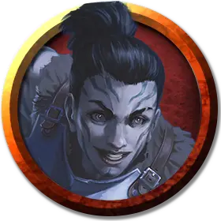

Скен Забрисс
Sken Zabriss
Средний Гуманоид (Голиаф), законно-злой, именной НИП

Класс Доспеха 16 (кираса, щит)
Хиты 45 (7к8 + 14)
Скорость 30 футов
| мод | спас | ||
|---|---|---|---|
| СИЛ | 16 | +3 | +3 |
| ЛОВ | 11 | +0 | +0 |
| ТЕЛ | 15 | +2 | +2 |
| мод | спас | ||
|---|---|---|---|
| ИНТ | 13 | +1 | +1 |
| МДР | 10 | +0 | +0 |
| ХАР | 12 | +1 | +1 |
Чувства пассивное Восприятие 10
Языки Общий, Великаний, Драконий
Опасность 1 (200 опыта)
Бонус мастерства +2
Особенности
Мощное телосложение. Скен считается на один размер больше когда определяется её грузоподъемность и вес, который она может толкать, тянуть и поднимать с земли.
Особое снаряжение. Скен носит кольцо затуманивания [ring of obscuring]. С его помощью она может накладывать заклинание туманное облако [fog cloud], нацеленным на себе, три раза в день. Облако существует 1 минуту (концентрация не требуется).
Действия
Длинный меч. Рукопашная атака оружием: +5 к попаданию, досягаемость 5 фт., одна цель. Попадание: 7 (1к8 + 3) рубящего урона, или 8 (1к10 + 3) рубящего урона при атаке двумя руками.
Реакции
Выносливость камня (перезаряжается после короткого или продолжительного отдыха). Когда Скен получает урон, она может снизить его на 8 (1к12 + 2).